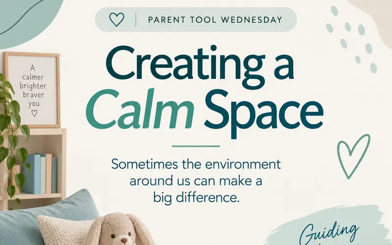

Tealway ABA: a calmer, more consistent Instagram
My role: Marketing Apprentice. I owned the content strategy, calendar, graphics and performance review for the account.
Tealway ABA's Instagram had a small audience and no steady rhythm. I built a content calendar around three pillars, designed two recurring series parents could rely on, and posted three times a week. Followers grew from 70 to 121.

A small account without a rhythm
Tealway ABA supports families through applied behaviour analysis therapy. Their Instagram started at 70 followers. The account needed a consistent posting rhythm and a more polished feed, and some graphics were being cropped badly by Instagram's grid.
For a therapy provider, that matters. Parents deciding who to trust with their child look for signs of care and expertise. A patchy feed sends the opposite message.
Be useful to parents, consistently
Strengthen Tealway's Instagram presence, make the brand look consistent and recognizable, and grow audience engagement.
Three pillars, three days, two series
The audience is parents, often tired and short on time. So I planned content that gives them something useful in a few seconds, on a schedule they can learn.
Educational content
Plain-language explanations of ABA, so the service feels approachable rather than clinical.
Parenting tools
Practical tips parents can use at home today. Became Parent Tool Wednesday.
FAQs
Answers to the questions families actually ask. Became FAQ Friday.
Why recurring series? A named format builds a habit for the audience and a system for the team. It also makes the feed recognizable at a glance.
Why Mon / Wed / Fri? Three fixed days a week is frequent enough to stay visible and predictable enough for parents to expect the next post.
What I made
- Built the content calendar around the three pillars and the Monday, Wednesday, Friday schedule.
- Designed the social graphics and carousel posts in Tealway's brand colours and visual identity.
- Fixed the Instagram cropping issues so the grid looked polished and consistent.
- Reviewed Instagram performance data to see which posts drove the most visibility and engagement, and fed that into planning.
Creating a Calm SpaceParent Tool Wednesday cover · 88 views Keep the space calmParent Tool Wednesday · the practical tips A little space goes a long wayParent Tool Wednesday · closing slide What does BT/RBT stand for?FAQ Friday cover · 70 views, 2 shares The answer, plainlyFAQ Friday · jargon made approachable
A bigger audience, and a feed that looks like a brand
Instagram views rose 71%, and the account kept a steady three-post-a-week schedule for the whole engagement. The account's 90-day Instagram Insights showed:
Source: Instagram Insights for the account (90-day window) and individual post metrics.
Want consistent, useful social content?
I'm open to social media, content and SEO roles.